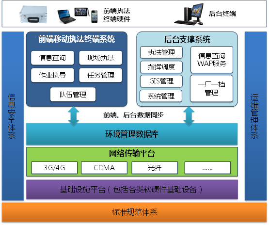

一、方案介绍
与日益严峻的环境形势和所承担的繁重环保任务相比,目前廊坊市环境监督管理中存在的问题：一是人手不足，难于应付日益增长的监督管理工作压力，执法手段和执法装备有待进一步提高；二是部分人员监管不力，执法不到位，执法人员素质有待进一步提高；三是环保执法人员对现场监管的内容还存在信息缺乏的情况，执法水平有待进一步提高。
环境监察信息化能力也建设相对滞后，现有系统仅为下发的污染源自动监控系统、排污申报收费系统、环境统计系统和污染源普查系统，与环境保护部的要求，还存在不少差距：一是移动执法系统建设尚未开展。目前，环境监察部门逐渐开展一些监察资料电子化的工作，所做的大都是探索性和基础性的工作，尚未建立较为完善的移动执法系统建设体系；二是环保信息数据支撑不足。目前，环境监察所采集的企业信息主要来自排污申报与收费管理数据库，仅能查询企业的基本信息、上年污染治理设施情况、上年主要产品和原辅材料年产（用）量、上年单位产品排污量等情况，还未能整合企业建设项目审批信息、排污许可信息、监测信息、行政处罚信息、环境信访信息等，远远无法满足现场执法的需要。
二、系统特点
系统总体架构在环境信息总体规划的指导下，以环境监察执法应用架构、业务架构和数据架构的需求为基础，结合当前主流和先进的技术方法和手段进行构建。
系统总体架构如下图：

项目的主要内容包括四个部分，分别为现场执法业务应用系统、移动执法后台支撑系统、现场执法终端硬件，以及基础软硬件。
·现场执法业务应用系统：
安装在移动执法终端和笔记本电脑上的现场执法软件。能够实现信息查询、现场执法、任务管理、环保手册查询、执法作业指导、地图查询、队伍管理等功能。
·移动执法后台支撑系统：
建立环境监察一体化平台，强化污染源监督管理及稽查考核功能，同时依托环境管理数据库，与现场执法业务应用系统互联，支撑其设计功能，并为执法检查前的准备、执法检查中信息的调用和采集以及执法检查后信息的分析汇总提供辅助支持。系统包括环境执法管理、污染源一厂一档管理、指挥调度、考核评价等内容。
·现场执法终端硬件：
包括执法终端和移动执法工具箱。
·基础软硬件：
用来支撑环境监察移动执法后台系统的运行
三、核心功能
基于地理的各类业务分析
系统有一个重要需求就是满足移动终端持有者对环保局各类信息的查询。其中大量的信息为空间地理分析查询。
基于GIS的信息查询有：
1．监管企业分布：将监管企业的经纬度坐标送入移动终端，实现基于移动终端的监管企业分布图。使用地图操作和查询进行快速浏览。
2．环境功能区域展示：通过GIS分别专题显示基本生态控制范围、水源保护区划、空气功能区划、噪声功能区划等。
3．监测点动态展示：展示监测点分布，和监测点相关属性数据。
4．重点污染源专题：展示重点污染源，便于监管人员迅速查询相关内容。
基于表格的各类业务分析
由于系统主要满足环保局各级领导和业务管理人员使用，各类查询应用，查询结果有文字类的展示，有表格类的展示，也具备更形象直观的基于饼状图、柱状图展示。
文字表格类：法律法规、企业数据、在线监测数据等。
表格图表类：重点监测河流。
现场多媒体信息采集和灵活表单定制
各级领导和专业人员在外出现场办公时，经常需要进行现场拍照、录音，并形成以多媒体信息为主线业务表单，发回到系统服务器端，并可以根据消息类型进入后台的工作流系统，较好的发挥了移动终端获取信息的便利性，提高了各级领导和专业管理人员的办公效率。
灵活的表单定制，是因为移动终端系统中领导和专业管理人员负责的内容和管理存在差异性，因此提供灵活的表单定制，满足不同人员采集信息的需求。使得信息采集后，能分别进入不同的业务系统，符合这些业务系统的数据要求。
采集位置可以通过地图位置选择和基于GPS技术定位来获得。
基于无线网络的多媒体数据传输
在系统中，突出的两个字是“移动信息”，在系统里面包含了现场人员需要将现场执法、管理、处理等信息发回到后台工作流管理系统。
信息采集包含现场照片，这些信息都需要经由无线网络传输到环保局。移动终端在执法工作中也需要查询大量的信息。无线网络的现实情况复杂，受真实环境中的各种影响比较大，所以需要考虑无线网络在传输速率和建立无线链接的成功率。
实现客户端版的业务浏览器
客户端在C/S结构中，嵌入HTML浏览器，实现客户端页面动态变化，即将客户端代码通过服务器发布，实现客户端内容的动态变化。此项功能特别适合从服务器到客户端的信息展现，譬如可以实现法律法规的动态变化，实现技术标准变化以后，无须修改客户端代码，只需要利用服务器端信息维护，即可实现信息的远程更新。
实现无线数据同步发布和数据共享
由于移动终端业务程序和业务数据（如基础地理数据、各个专业图层）都存在更新变化的可能性，系统需要自动提供版本更新方式。即当程序或数据发生变化时，将需要更新的程序和数据部署到服务器端，并发布更新，客户端程序自动检测程序版本和数据版本，发现旧版本，提示用户开始进行自动更新选择。
考虑更新的内容和文件大小不同，提示用户选择两种通信模式进行更新，
数据量不大时，可以通过无线更新。
数据量较大时，为了提高更新效率，可以通过无线终端与办公室桌面PC的USB通讯功能进行。
信息查询
执法移动终端或便携式电脑可通过后台支撑系统访问相关环境管理数据库中的各类信息，包括污染源基本信息、建设项目审批信息、排污许可信息、监督性监测信息、行政处罚信息、环境信访信息、申报与收费信息等；同时亦可通过本地或在线查询的方式获取包括法律法规、化学品特性与处理处置方法、污染物排放标准、行业环境监察指南、环境应急手册、执法程序与行为规范在内的各项执法规范数据。
如部分地区因相关环境管理数据库建设不完善等客观原因暂未能接入的，现场执法业务管理软件预留相应数据接口。
现场执法
可通过拍照、录音或录制简单视频方式采集现场信息，并支持格式化的信息录入方式制作现场电子监察记录或执法电子文书；可支持使用便携式打印机打印相关文书，交由企业相关负责人签字确认或使用电子签名；可通过移动通信网络上传相关执法信息和数据，并归入污染源档案中（一厂一档）。
现场执法功能还可对需要核实核查的信息（如污染源信息更新，排污口、污染治理设施及污染管网等重要环保设施地图标定等）进行修改和确认。
现场执法功能具备现场检查记录离线缓存和在线更新功能。
现场执法功能可根据需要由执法移动终端单独实现或由移动执法工具箱和执法移动终端共同实现。
执法作业指导
根据国家或地方制定的行业环境监察执法指南制作移动执法作业指导书，引导环境监察人员对特定行业企业进行日常监督检查，并根据检查情况生成现场电子监察记录或执法电子文书。
各区、市结合本区域行业分布特点，在现场业务执法管理软件中集成至少3个重点行业的移动执法作业指导书。同时，现场业务执法管理软件支持符合规范要求的第三方编写的移动执法作业指导书插件。
任务管理
能动态管理不同来源和不同类型的任务，如查询任务内容、跟踪任务进展和完成例行任务、领导交办、上级交办、公众举报、监测报警、专项检查、建设项目检查等类型任务。